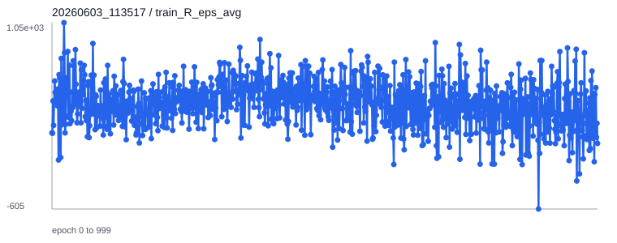
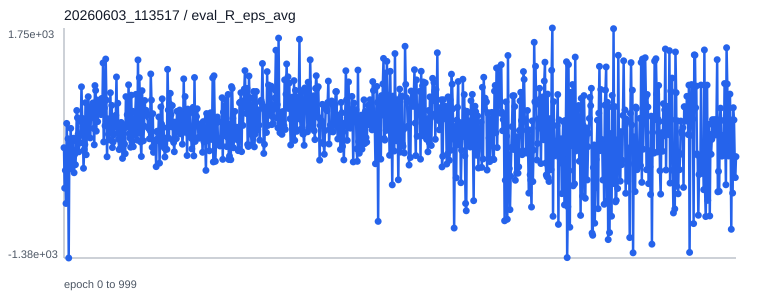
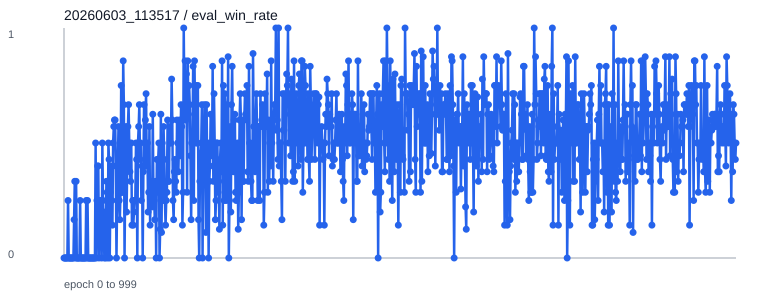
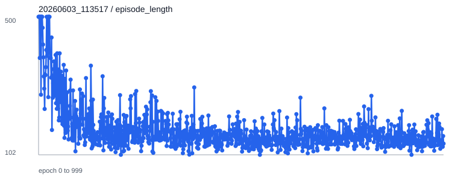

日期：2026-06-03。实验目标是训练一个固定形态 Ant 策略，不优化形态参数；环境为 sumo 对抗，算法形式为 self-play：物理环境中仍有两个 agent，但只有 agent0 的策略被优化，agent1 作为 shadow opponent 从 agent0 的历史 checkpoint 中加载。
robo-sumo-ants-v0 和 selfplay-agent-runner，训练目标是固定形态 Ant 的 sumo 对抗策略。训练完成 1000 epoch，最终 checkpoint 和 best checkpoint 均已保存，并完成 100 episode 评测。
| 项目 | 内容 |
|---|---|
| 环境 | robo-sumo-ants-v0 |
| Runner | selfplay-agent-runner |
| 形态 | 固定 Ant 形态，不输出、不优化形态参数。 |
| 策略 | 只优化一个 PPO policy/value；shadow opponent 不更新参数。 |
| 对手采样 | delta: 0.5，训练中从历史 checkpoint 区间采样 opponent。 |
| 训练规模 | max_epoch_num: 1000，每 epoch 采样 50000 steps。 |
| 正式 run | tmp/robo-sumo-ants-v0/20260603_113517 |
| 类型 | 路径 | 说明 |
|---|---|---|
| 最终 checkpoint | tmp/robo-sumo-ants-v0/20260603_113517/models/epoch_1000.p | 1000 epoch 训练完成后的单策略 checkpoint。 |
| best checkpoint | tmp/robo-sumo-ants-v0/20260603_113517/models/best.p | 训练过程中按 eval reward 或 win rate 触发保存。 |
| sanity checkpoint | tmp/robo-sumo-ants-v0/20260603_113346/models/epoch_0001.p | 1 epoch 短训练，用于验证训练和评测链路。 |
# sanity check
conda run -n EAI python train.py \
--cfg config/repro/fixed-ant-selfplay-sanity.yaml \
--num_threads 1 --use_cuda True --gpu_index 0
# 正式训练
conda run -n EAI python train.py \
--cfg config/repro/fixed-ant-selfplay-long.yaml \
--num_threads 50 --use_cuda True --gpu_index 0# final self-match
conda run -n EAI python scripts/evaluate_checkpoint.py \
--cfg config/repro/fixed-ant-selfplay-long.yaml \
--ckpt_dir tmp/robo-sumo-ants-v0/20260603_113517/models \
--ckpt 1000 --episodes 100 --seed 501 \
--out reports/selfplay_fixed_ant/eval/final_epoch1000_selfmatch.json --selfplay
# best self-match
conda run -n EAI python scripts/evaluate_checkpoint.py \
--cfg config/repro/fixed-ant-selfplay-long.yaml \
--ckpt_dir tmp/robo-sumo-ants-v0/20260603_113517/models \
--ckpt best --episodes 100 --seed 502 \
--out reports/selfplay_fixed_ant/eval/best_selfmatch.json --selfplay
# final policy vs historical opponents
conda run -n EAI python scripts/evaluate_checkpoint.py \
--cfg config/repro/fixed-ant-selfplay-long.yaml \
--ckpt_dir tmp/robo-sumo-ants-v0/20260603_113517/models \
--ckpt 1000 --opponent_ckpt 250 --episodes 100 --seed 503 \
--out reports/selfplay_fixed_ant/eval/final_vs_epoch0250.json --selfplay
conda run -n EAI python scripts/evaluate_checkpoint.py \
--cfg config/repro/fixed-ant-selfplay-long.yaml \
--ckpt_dir tmp/robo-sumo-ants-v0/20260603_113517/models \
--ckpt 1000 --opponent_ckpt 500 --episodes 100 --seed 504 \
--out reports/selfplay_fixed_ant/eval/final_vs_epoch0500.json --selfplay
conda run -n EAI python scripts/evaluate_checkpoint.py \
--cfg config/repro/fixed-ant-selfplay-long.yaml \
--ckpt_dir tmp/robo-sumo-ants-v0/20260603_113517/models \
--ckpt 1000 --opponent_ckpt 750 --episodes 100 --seed 505 \
--out reports/selfplay_fixed_ant/eval/final_vs_epoch0750.json --selfplay| 评测 | agent0 checkpoint | agent1/opponent checkpoint | 平均回报 agent0 / agent1 | 胜率 agent0 / agent1 | 平局率 | 平均长度 | JSON |
|---|---|---|---|---|---|---|---|
| final self-match | epoch_1000.p | epoch_1000.p | 1161.83 / -211.60 | 0.60 / 0.40 | 0.00 | 158.36 | JSON |
| best self-match | best.p | best.p | 729.05 / 246.24 | 0.50 / 0.50 | 0.00 | 162.55 | JSON |
| final vs history 250 | epoch_1000.p | epoch_0250.p | 636.03 / 212.20 | 0.52 / 0.48 | 0.00 | 158.67 | JSON |
| final vs history 500 | epoch_1000.p | epoch_0500.p | 838.07 / 92.95 | 0.52 / 0.48 | 0.00 | 159.12 | JSON |
| final vs history 750 | epoch_1000.p | epoch_0750.p | 910.80 / -34.00 | 0.57 / 0.43 | 0.00 | 153.17 | JSON |
TensorBoard 标量已导出为 SVG。最后一个 epoch 的记录为：train reward -21.10，eval reward 0.51，eval win rate 0.50，episode length 134.25。




| 问题 | 处理 |
|---|---|
原 selfplay-agent-runner 按 env 而不是具体 agent 初始化 learner，不适合直接接入当前多智能体固定形态 sumo 环境。 | 最小修改为按 self.env.agents[0] 初始化可训练 learner，按 self.env.agents[i] 初始化 shadow learner。 |
self-play 保存单个 checkpoint，原评测脚本默认读取 agent_0/agent_1 目录。 | 给评测脚本增加 --selfplay 与 --opponent_ckpt 支持，同一个目录下的单策略 checkpoint 可加载给双方。 |
| 并行评测会同时写同一个 MuJoCo scene XML，导致 XML 竞争写入。 | 改为串行评测。该问题不影响训练 checkpoint，但后续批量评测应避免同一 env 并行创建。 |
conda run -n EAI python train.py \
--cfg config/repro/fixed-ant-selfplay-long.yaml \
--ckpt_dir tmp/robo-sumo-ants-v0/20260603_113517/models --ckpt 1000 \
--num_threads 50 --use_cuda True --gpu_index 0